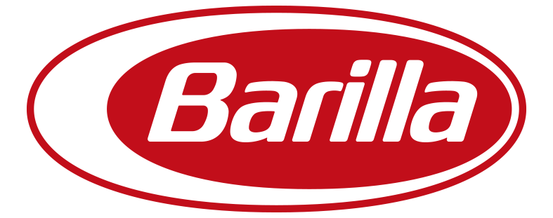
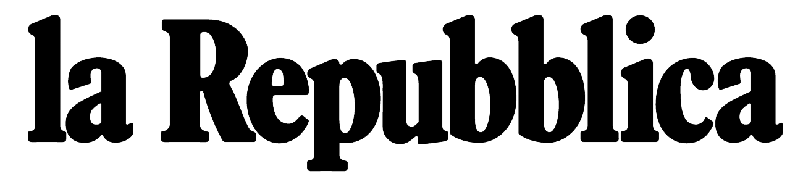
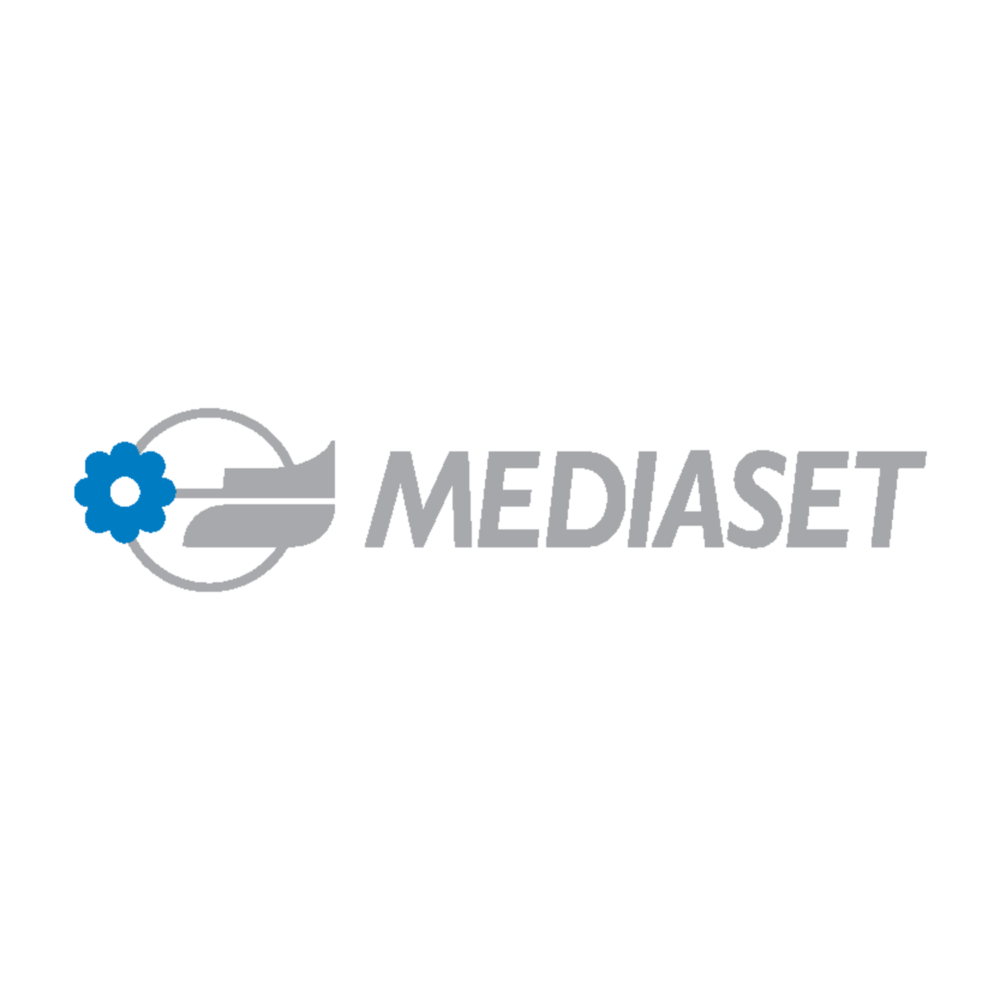
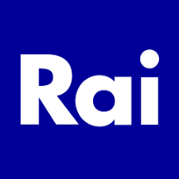
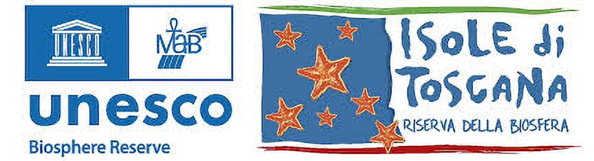

BluCineLab
Direction,
image and space
held in one system.
BluCineLab is an independent studio working across moving image, visual direction, installations and cultural production.
We develop projects where concept, atmosphere, production and final form belong to the same structure. Not visibility for its own sake, but precise work with presence.
Studio
A small studio with a precise way of building form.
Direction, production discipline and visual coherence.
BluCineLab works where image is not decoration, but part of the structure of meaning.
We move across film, commissioned audiovisual work, installations, cultural production and visual systems for projects that need more than isolated execution.
The studio becomes most useful when the task is to hold concept, rhythm, production and presence together, without losing force or clarity.
Our practice is shaped by research, visual sensitivity, field experience and a preference for work that remains legible over time.
Areas of work
What we do.
Different formats, one coherent logic.
01
Creative Direction
Visual direction, concept building and art direction for projects that require language, identity and structure.
02
Moving Image
Film, documentary, commissioned video and hybrid audiovisual formats shaped through image, sound and rhythm.
03
Spatial Projects
Installations, exhibition environments and scenographic systems where space operates as a perceptual medium.
04
Cultural Production
Projects developed with institutions, festivals, artists and educational or social contexts.
05
Identity & Presence
Visual coherence across image, tone and public presence for studios, brands and cultural organisations.
Method
How we work.
Fewer signals. Better decisions.
We begin with reading the real nature of the project. Format comes after direction, not before.
Once the core is clear, we define image logic, narrative rhythm, production structure and final delivery.
One system, not fragments
Image, text, sound, space and timing are treated as connected parts whenever the project asks for coherence.
Research before display
We prefer contextual reading and grounded choices over templates, noise or fashionable shortcuts.
Direct exchange
The quality of the outcome depends on the quality of the conversation that happens before execution.
Presence over volume
We value fewer, stronger and more durable outputs over overproduction without identity.
Working note
Studio statement
Image as structure.
Space as medium.
Narrative as method.
People
Core direction and selected collaborators.
A compact structure shaped through recurring collaborations.
Core
Anton Likht
Instagram ↗Direction · Cinematography · Visual systems
Sonia Giudici
Instagram ↗Creative production · Artistic dialogue · Project development
Federico Basagni
Instagram ↗Visual production · Scenographic and operational support
Selected directions
Projects and trajectories.
A concise view of recurring lines of work.
Installation · Spatial image
2026
Cube System
Bologna
A reflective chamber built through image, projection, sound and spatial contrast.
Moving image · Commissioned work
Ongoing
Audiovisual commissions
Brand and cultural contexts
Films and visual productions designed to carry atmosphere, clarity and identity across formats.
Cultural production · Public context
Ongoing
Educational and cultural activations
Schools, communities, festivals, institutions
Projects where production, social context and artistic language need to be held together with care.
Identity · Presence systems
Ongoing
Visual language building
Studios, organisations and special projects
Development of visual coherence across image, tone, communication assets and digital presence.
Selected references, treatments and case-specific materials are shared directly depending on context and conversation.
Request selected work →Selected relationships
A few contexts the studio has crossed.
Shown quietly, as context rather than spectacle.
A restrained selection of brands, editorial and institutional environments connected to past work and collaborations.
01
Selected relationships





Press · Traces · Public notes
Selected public traces.
Articles, releases and public references connected to projects and collaborations.
Pop Corn fra le poltrone del Polidor Marzocchi
Public trace connected to a project where Sonia Giudici is credited for executive production, Anton Likht for cinematography, and Federico Basagni for scenography.
Il viaggio
Film page crediting Sonia Giudici for direction and editing, with Anton Likht as director of photography.
Blackpop fashion show
Article documenting the project with Sonia Giudici quoted as one of the organisers.
Bologna Furiosa
Public article preserved here as part of a broader cultural and production orbit connected to past work.
Valeria Fonte: mai più donne vittime e uomini impuniti
Article page carrying Anton Likht credit on the piece.
Contact
Start a conversation.
Collaborations, commissions, installations, moving image, cultural projects and visual systems that require a precise and distinctive result.